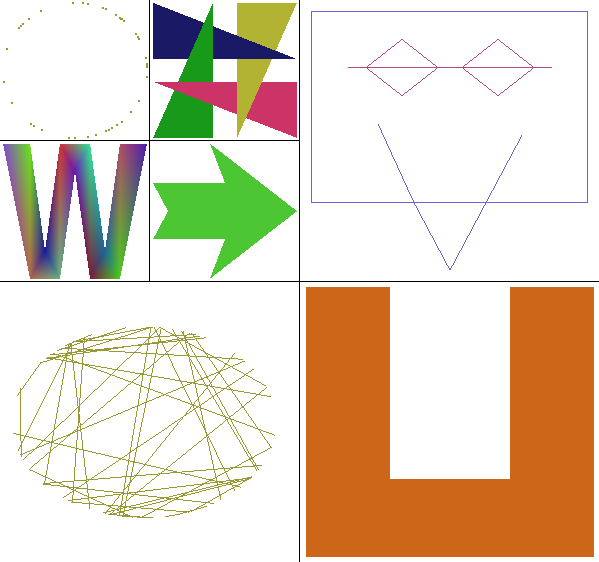

IN6 - Canevas du TP sur les primitives graphiques OpenGL
Préambule
Ce TP est un entraînement au tracé de primitives
graphiques. Il s'appuie sur les notions du cours, et met en
évidence plusieurs erreurs de tracé classiques.
Ajouter les archives /usr/share/jogamp/jar/gluegen-rt.jar
et /usr/share/jogamp/jar/jogl-all.jar à la variable
d'environnement CLASSPATH.
Compléter le fichier Drawing.java pour afficher les
figures suivantes en imposant pour chacune un type de primitive
de tracé.
La commande java Exo dessine toute la fenêtre de
tracé.
Un argument correspondant à un numéro d'emplacement
(exemple: java Exo 5) effectue un zoom sur l'emplacement
du shadok.
- Règles à respecter, par ordre de priorité :
- 1) Respecter les tracés spécifiés (des
exemples sont fournis dans la figure ci-dessous).
- 2) Les traits et les faces ne doivent pas se recouvrir.
- 3) Utiliser le moins possible de blocs
glBegin / glEnd.
- 4) Pour chaque figure où il n'est pas
spécifié, minimiser le nombre de sommets
utilisés dans chaque bloc.
- 5) Spécifier les sommets dans le sens
trigonométrique direct pour les figures pleines
(la touche 'b' active l'élimination
des faces arrière).
- 6) Utiliser une couleur différente par figure,
s'écartant des couleurs fondamentales pures
(blanc, noir, rouge, vert, bleu), sauf quand demandé
(la touche 'f' change la couleur de fond).

- Les figures à tracer sont :
- 1) GL_POINTS (méthode displayPoints) :
45 points de couleur identique aléatoirement
répartis sur un cercle selon une loi de
probabilité uniforme (utiliser Math.random ()),
à placer sur l'espace 1 (]-100,-50[ en X et ]50,100[
en Y).
- En principe, un seul bloc glBegin / glEnd suffit.
- Par défaut, 4 points noirs sont tracés
aléatoirement à l'intérieur de l'espace
prévu; on peut changer la couleur de fond avec la touche
'f'.
- Défaut visuel possible : une disposition radiale
irrégulière des points.
- 2) GL_LINES (méthode displayLines) :
45 traits de couleur identique joignant les bords d'une ellipse,
à placer sur l'espace 6 (]-100,-50[ en X et ]-100,-50[
en Y). Ces bords seront aléatoirement répartis en
utilisant la méthode du jardinier.
- La méthode du jardinier consiste à attacher une corde
de longueur C au deux foyers de l'ellipse, et à
tourner autour des foyers tout en maintenant la corde tendue.
- En principe, un seul bloc glBegin / glEnd suffit.
- 3) GL_LINE_STRIP (méthode displayLineStrip) :
un shadok à lunettes, tracé
sans recouvrement, avec l'extérieur de couleur
dominante bleue et les lunettes de couleur dominante rouge,
à placer sur l'espace 5 (]0,100[ en X et ]0,100[ en Y).
- En principe, deux blocs glBegin / glEnd suffisent.
- 4) GL_TRIANGLES (méthode displayTriangles) :
4 triangles entrelacés un à dominante rouge,
un à dominante verte, un à dominante bleue et un
à dominante jaune (attention, bien respecter l'ordre des
recouvrements), à placer sur l'espace 2 (]-50,0[ en X et
]50,100[ en Y).
- En principe, un seul bloc glBegin / glEnd suffit.
- Pour cette figure, on autorise le recouvrement de faces.
- Défaut visuel possible : un triangle avec un
décrochement sur un des bords.
- 5) GL_TRIANGLE_STRIP
(méthode displayTriangleStrip) :
une lettre 'W' épaisse, avec une teinte arlequin (une
couleur distincte par sommet), à placer sur l'espace 3
(]-100,-50[ en X et ]0,50[ en Y). Il ne doit pas y avoir de
recouvrement de face, ni de discontinuité de couleur
apparente.
- En principe, un seul bloc glBegin / glEnd et 13 sommets
suffisent.
- 6) GL_TRIANGLE_FAN
(méthode displayTriangleFan) :
une flèche épaisse tournée à droite,
avec un creux dans l'empenage, de couleur uniforme à
dominante verte, à placer sur l'espace 4 (]-50,0[ en X
et ]0,50[ en Y).
- En principe, un seul bloc glBegin / glEnd suffit.
- 7) GL_QUADS (méthode displayQuads) :
une lettre 'U' très épaisse avec des angles droits,
de couleur uniforme à dominante rouge,
sans recouvrement entre les différents
quadrilatères, à placer sur l'espace 7 (]0,100[
en X et ]-100,0[ en Y).
- En principe, un seul bloc glBegin / glEnd suffit.
- Défaut visuel possible : des trous peuvent apparaître
quand on le fait tourner (touche 'r').